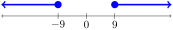
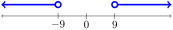

The concepts we learn in this section will be useful in a variety of applications, including:
A manufacturer needs to cut metal rods to \(100\) centimeters with a tolerance of \(0.5\) centimeters. What is the range of a rod’s length that is acceptable to the manufacturer?
A doctor is monitoring a patient’s blood sugar, with a target of \(85\) mg/dL and a tolerance of \(15\) mg/dL. What is the range of blood sugar levels that are acceptable to the doctor?
Before diving right into solving an absolute value equation, we pause to discuss what it means to solve any equation, and we do this by example. Examine solving the equation \(x^2 = 2x + 8\text{.}\) Here are several comments, separated one at a time:
If someone wrote \(x = \pm\sqrt{2x+8}\text{,}\) they haven’t really solved the equation, because the variable should be isolated on one side (which it is), but without the variable appearing on the other side.
As a final answer, someone might write \(x = 4\) or \(x = -2\text{.}\) This is a complete and correct final answer, but we have left out the work. There are three methods that come to mind for solving this equation, which we summarize:
One person may prefer to get all terms on one side, then factor to have \((x-4)(x+2) = 0\text{,}\) then use the Zero Product Property to get \(x-4=0\) or \(x+2=0\text{,}\) and end with \(x = 4\) or \(x = -2\text{.}\)
Regardless of which of the three methods are applied (that is, independent of the specific work that gets shown), we need to focus on what it actually means to solve an equation. Put directly, what does it mean that the question was to solve \(x^2 = 2x + 8\) and that our answer to that question was “\(x = 4\) or \(x = -2\)”?
Solving an equation means providing a complete list of all values of the variable that make the equation true. We didn’t provide an extra value that doesn’t work, and we didn’t leave out any values that do work. This removes the focus on how we got to the final answer, and instead focuses on the connection between the question and the answer.
This idea is so important that we need to put this in a box:
Principle2.7.1.What it means to solve an equation.
Solving an equation means providing a complete list of all values of the variable that make the equation true. (We don’t provide an extra value that do not work, and we don’t leave out any values that do work.)
Note that in the previous example, we have hidden the process that we applied. Left completely out was any discussion of what we did to both sides or any other techniques that were involved in getting from \(|4x+8|-10 = 10 - |2x-4|\) to \(x = -4\text{,}\) but this meant that we could focus on the connection between the question and the answer mentioned in Principle 2.7.1. In particular, we stated that \(x=-4\) is a solution, and the format of that equation was \(x\) alone on one side, the equal sign, and then a number on the other side.
One key thing to note before we discuss techniques to solve these kinds of equations is that the absolute value of a number is always non-negative. For example, \(|-5|\) and \(|5|\) are both equal to \(5\text{.}\)
We need to provide a complete list of \(x\) values that make the equation true. So, our response to \(|x| = 5\) is “\(x=5\) or \(x=-5\)”. It is not correct to respond to \(|x|=5\) with “\(|x|=5\) or \(|x|=-5\)”, because that is not stating values of \(x\text{.}\)
The answer is not “\(|u|=8\) or \(|u|=-8\)”. Like before, our final answer is talking about \(u\text{,}\) but it should not be trying to say that \(|u|\) is equal to something, especially to a negative number like \(-8\text{.}\)
In this question, adding \(2\) to both sides does not help. If we add \(2\) to both sides, we have
\begin{equation*}
|x-2| + 2 = 10
\end{equation*}
and note that the plus \(2\) outside parentheses does not undo the minus \(2\) inside parentheses. In the question before this one, we had \(|x| - 2 = 8\) and adding \(2\) to both sides did undo the minus \(2\) outside the absolute value.
So, instead in \(|x-2| = 8\text{,}\) we will focus on the content inside the absolute value, which is \(x-2\text{,}\) and replace this with \(u\text{.}\) Then, the question \(|x-2| = 8\) becomes \(|u| = 8\text{,}\) which we know how to solve. Borrowing our work from Example 2.7.7, we have \(u = 8\) or \(u = -8\text{.}\) (Note that we don’t have “\(|u| = 8\) or \(|u| = -8\)”.) Earlier, we replaced \(x-2\) with \(u\text{.}\) Now, we do the reverse, replacing \(u\) with \(x-2\text{,}\) and we have \(x-2 = 8\) or \(x-2 = -8\text{.}\) Finally, we add \(2\) to both sides of each equation to get \(x = 10\) or \(x = -6\text{.}\)
The content inside the absolute value is \(2x-3\text{.}\) Replace \(2x-3\) with \(u\text{:}\)
\begin{equation*}
|u| = 7
\end{equation*}
To answer this question (and report on values of \(u\) which satisfy the equation), we have:
\begin{equation*}
u=7 \text{ or } u=-7
\end{equation*}
and note that the above is correct, but “|u|=7 \text{ or } |u|=-7” is not correct. Now, we reverse the substitution, replacing \(u\) with \(2x-3\text{,}\) and we have
\begin{equation*}
2x-3=7 text{ or } 2x-3=-7.
\end{equation*}
Add \(3\) to both sides of each equation:
\begin{equation*}
2x=10 \text{ or } 2x=-4.
\end{equation*}
Divide by \(2\) on both sides of each equation:
\begin{equation*}
x=5 \text{ or } x=-2.
\end{equation*}
We now look at inequalities that involve absolute values. We start with plainer examples such as solving \(|x| \leq 6\) before moving on to more involved examples such as solving \(|2x-3| \leq 7\text{.}\) The plain examples will just have a single variable (and nothing else) inside the absolute value, while the more involved examples will have a more complicated expression inside the absolute value such as \(2x-3\text{.}\) In the plain examples, there is no need to do any substitution, but in the more involved examples, it will help us to do a substitution to compartmentalize the work.
Keeping in mind that we need to report values of \(x\) that work, notice that \(x=0\) works, as does \(x=1\) as well as \(x=5\) and also \(x=6\text{,}\) but so does \(x=-6\text{.}\) It appears any value of \(x\) that is between \(-6\) and \(6\) works. This is helpful to see on a number line: Figure2.7.12.\(x\) can be anything between \(-6\) and \(6\text{,}\) including \(6\) and \(-6\)
Keeping in mind that we need to report values of \(x\) that work, notice that \(x=0\) works, as does \(x=1\) as well as \(x=2\) as well as \(x=2.9\) but not \(x=3\text{.}\) In addition, \(x=-2.9\) also works. It appears any value of \(x\) that is between \(-3\) and \(3\) works, but not including the endpoints. This is helpful to see on a number line: Figure2.7.14.\(x\) can be anything between \(-3\) and \(3\text{,}\) but not including the endpoints.
In the warning above, notice the flaw of the incorrect version: we need to report about \(x\text{,}\) not about \(|x|\text{.}\) In addition, in the incorrect version, we start with \(|x| < 3\text{,}\) but then the conclusion has the same inequality plus the additional inequality \(|x| > -3\text{:}\) that just makes our problem worse!
Now, notice that \(x=0\) does not work as a solution. The first working positive number is \(x=9\text{.}\) We note that \(x=10\) works, as does \(x=100\text{.}\) On the negative side \(x=-9\) is a solution, but so is \(x=-10\text{.}\) Based on this information, we can draw a picture of all values of \(x\) which satisfy the inequality:

Figure2.7.17.\(x\) can be anything beyond \(-9\) or beyond \(9\text{,}\) but including the endpoints.
Based on the picture, we can write \(x \leq -9\) or \(x \geq 9\text{.}\) (Here we write the word “or” recalling its meaning from Section 2.6. The use of the word “or” means that at least one of the two conditions is satisfied.) In interval notation, we have \((-\infty,-9] \cup [9,\infty)\text{.}\)
Now, notice that \(x=0\) does not work as a solution. While \(x=9\) does not work, \(x=9.1\) does, as does \(x=10\text{.}\) We note that \(x=10\) works, as does \(x=100\text{.}\) On the negative side \(x=-9\) is not a solution, but \(x=-9.1\) is, and so is \(x=-100\text{.}\) Based on this information, we can draw a picture of all values of \(x\) which satisfy the inequality:

Figure2.7.19.\(x\) can be anything beyond \(-9\) or beyond \(9\text{,}\) but including the endpoints.
When we have an absolute value inequality with a more complicated expression inside the absolute value, we will do a substitution to compartmentalize the work. (This substitution is never required, but helpful. Finally, in the case when the expression inside the absolute value is just a single variable, we don’t need to do a substitution.)
From our previous work, and the figure (which is about \(u\) and not about \(x\)), we know that this inequality is equivalent to
\begin{equation*}
u \geq -40 \text{ and } u \leq 40.
\end{equation*}
Note that our previous line of work is two inequalities have \(u\) alone on one side. Having “\(|u| \geq -40 \text{ and } |u| \leq 40\)” is not correct. Now that we have two inequalities with \(u\) alone on one side, we can reverse the substitution, replacing \(u\) with \(2x-4\text{,}\) and we have
We will use the substitution \(u = 2x-4\text{.}\) Then the inequality becomes
\begin{equation*}
|u| > 40.
\end{equation*}
Here is a picture of all values of \(u\) which satisfy the inequality: Figure2.7.23.\(u\) can be anything less than \(-40\) or greater than \(40\text{,}\) but not including the endpoints.
\begin{equation*}
u < -40 \text{ or } u > 40.
\end{equation*}
Note that our previous line of work is two inequalities have \(u\) alone on one side. Having “\(|u| < -40 \text{ or } |u| > 40\)” is not correct. Now that we have two inequalities with \(u\) alone on one side, we can reverse the substitution, replacing \(u\) with \(2x-4\text{,}\) and we have
A manufacturer needs to cut metal rods to \(100\) centimeters with a tolerance of \(0.5\) centimeters. What is the range of a rod’s length that is acceptable to the manufacturer?
Suppose \(x\) is the length of a rod in centimeters. Then the manufacturer wants \(|x-100| \leq 0.5\text{.}\) Substituting \(u=x-100\text{,}\) we have \(|u| \leq 0.5\text{.}\) This is equivalent to \(u \geq -0.5\) and \(u \leq 0.5\text{.}\) Reversing the substitution, we have \(x-100 \geq -0.5\) and \(x-100 \leq 0.5\text{.}\) Adding \(100\) to all parts of the inequality, we have \(x \geq 99.5\) and \(x \leq 100.5\text{.}\) In interval notation, we have \([99.5, 100.5]\text{.}\)
A doctor is monitoring a patient’s blood sugar, with a target of \(85\) mg/dL and a tolerance of \(15\) mg/dL. What is the range of blood sugar levels that are acceptable to the doctor?
Suppose \(x\) is the patient’s blood sugar level in mg/dL. Then the doctor wants \(|x-85| \leq 15\text{.}\) Substituting \(u=x-85\text{,}\) we have \(|u| \leq 15\text{.}\) This is equivalent to \(u \geq -15\) and \(u \leq 15\text{.}\) Replacing each \(u\) with \(x-85\text{,}\) we have \(x-85 \geq -15\) and \(x-85 \leq 15\text{.}\) Adding \(85\) to both sides of both inequalities, we have \(x \geq 70\) and \(x \leq 100\text{.}\) In interval notation, we have \([70, 100]\text{.}\)
When we have the absolute value of a variable is equal to a positive number, we can create two equations: the variable is equal to the positive number, connect with “or”, followed by the equation where the variable is eqaul to the negative of that number.
In an equation, when the content inside the absolute value consists of more than a single variable, substituting a new letter for all of the content inside the absolute value will create a simpler absolute value equation, which lets us compartmentalize the work.
When solving absolute value inequalities where the content inside the absolute value is a single variable, we can use a number line to help us visualize the solution set.
In an inequality, when the content inside the absolute value consists of more than a single variable, substituting a new letter for all of the content inside the absolute value will create a simpler absolute value inequality, which lets us compartmentalize the work.